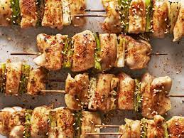

Ingredients
- Ingredients
- 1 lb goat meat or beef cut into 1 inch cubes
- 1 onion quartered
- 5 fresh ripe plum tomatoes, crushed
- 1/2 small can of tomato puree
- 1/2 onion diced
- 1 bouillon cube Maggi
- 6 pili-pili chilies use any hot chili you like
- Vegetable oil
- Salt to taste>